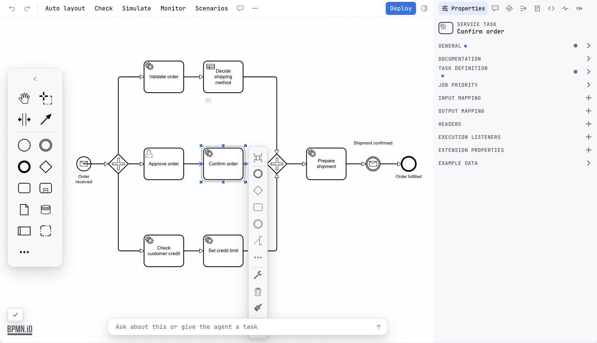
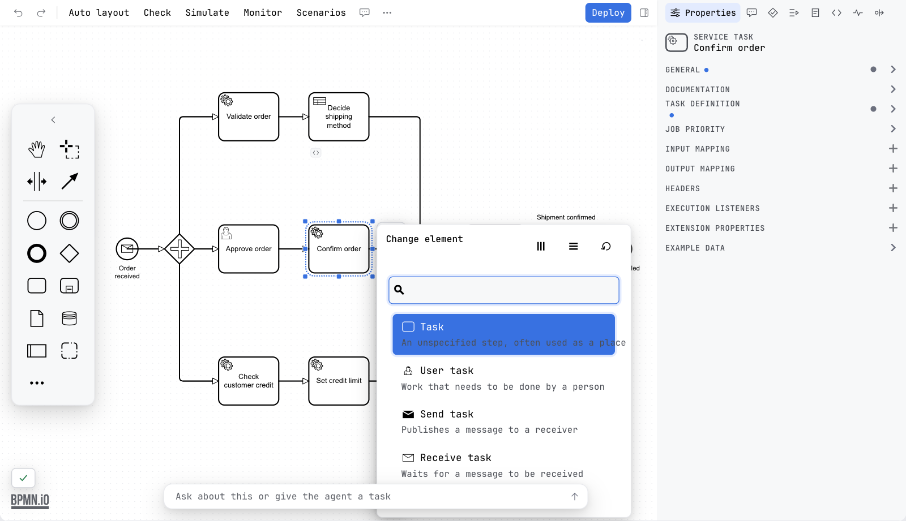
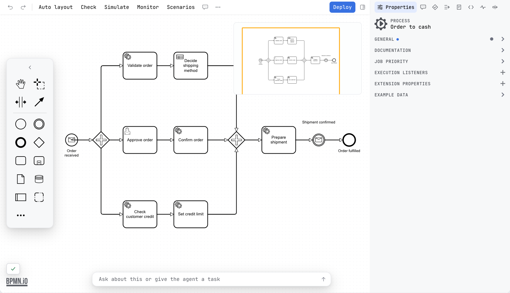

Guide / Draw and edit
Editing a diagram
The window around the canvas: the toolbar, the palette, the sidebar, the XML one tab away, and every action that edits a diagram.
What the editor is
Penstock draws your diagram with bpmn-js in a browser built into your tool. The modelling surface is the familiar one. What Penstock adds is the tool around it: a toolbar you arrange, a command palette over every action, a sidebar with tabs for the properties, the AI chat, problems, scenarios, comments, code, Monitor and debug, and the raw XML never more than one click away.
Add an element
- Drag an element from the palette beside the canvas and drop it where you want it.
- Type to give it a name. Double-click the element to rename it later.
- To connect it to another element, select the first one and drag from the arrow icon of the small pad beside it onto the second.
Or let Penstock add the next element for you: select an element and use the pad beside it. The pad appends the element you choose, already connected. Its Create element catalogue lists every element by what it is for. See BPMN elements.

Change an element into another
- Select the element.
- Press the wrench on its pad.
- Pick what it should become. A task can become a service task, a start event a message start event, an exclusive gateway a parallel one.
The name, the connections and the properties that still apply are kept.
The tools at the top of the palette
| Tool | What it does |
|---|---|
| Hand | Moves the canvas without selecting anything. |
| Lasso | Selects everything inside a rectangle you drag. |
| Space | Makes room. Drag a line across the diagram and everything past it moves. |
| Global connect | Draws a connection starting from any element. |
The canvas and the palette
Which modeller is built depends on the engine profile: Camunda 7, Camunda 8, Operaton and CIB seven get the matching Camunda modeler, which carries that platform's own extensions, properties and element templates, and Classic BPMN gets plain bpmn-js with the standard ones. All of them load task resizing, token simulation and the minimap, the colour picker in the context pad, and the grid with snapping. See Engines.
The palette is a floating island beside the canvas, not a strip of the window: sixteen pixels from the left edge, vertically centred, rounded, and never more than three quarters of the height of the canvas, so a palette with more entries scrolls inside it. In a tall canvas it is one column of entries, and in a short one the library's own two columns. A canvas with a palette beside it is inset, so nothing sits under it, and a diagram is fitted into that inset when it opens.
The toggle at the top of the island folds it to a small handle at the left edge of the canvas. The choice is yours, and is kept for every tool you use. On a canvas under 560 pixels high or 720 pixels wide the palette folds by itself until you open it, and opening it there keeps it open for that canvas.
Where the diagram opens
The first view of a diagram fits it into the canvas, less only the islands it would sit under (the palette and the AI chat input), and never larger than 100%. It never opens smaller than 85%: a diagram that would fit only smaller opens at 85%, anchored so that its first start event is in view, and you pan from there.
After that the view is yours. Resizing the window, showing or hiding the sidebar, folding the chat, switching tabs and switching your tool's theme never re-fit, re-centre or change the zoom, and keep your pan and your selection. Only the first view and an explicit Fit diagram do, from the toolbar, the More menu or its shortcut.
Focus canvas
Focus canvas, in the More menu, hides the sidebar so that only the canvas is left, and brings it back when you use it again. It has a shortcut, listed in the shortcuts of your tool. It is yours for the window you are in and is never saved: the next window shows the sidebar as you left it.


Let Penstock suggest the next element
When a flow ends at an element with nothing after it and Penstock is confident of what comes next, it draws that element as a faint ghost beside the dead end. It works that out from the diagram, the elements around it and the names in your project. Press Tab to add it, already connected, as one undo step, or Esc to dismiss it. Penstock speaks only when it is confident. Free. The switch is in the preferences of your tool, and is kept as suggestNextBlock in ~/.penstock/preferences.json. See Suggestions.
Undo and redo
Undo and Redo are the first two buttons on the toolbar. They step through every change in the order you made it, through the modeller's own command stack. While a token simulation runs they refuse to run, so a preview cannot change your file.
Copy and paste
Copy and paste use the clipboard of your system or tool, not a clipboard private to one diagram. So you can copy a pool from one diagram and paste it into another open diagram. Copy and Paste are in the More menu. Pasting from the toolbar has no mouse position, so the elements land in the middle of the view. It reads the clipboard as it is, and says when there is nothing to paste.
Duplicate puts a copy of the selection next to it, in place, without touching the clipboard. Its key is in the Keyboard shortcuts sheet. The requirements diagram of a decision takes cut, copy, paste and duplicate through the same keys and menu entries.
To get the diagram itself as a picture, use Copy in the export dialog. It is free. See Export.
Scripts and conditions
Under Camunda 7, Operaton and CIB seven, a field that holds a script is a small code editor with colours, and Edit in new tab opens it in a code editor of your tool as a real file. See Scripts in their own tab.
Transaction boundaries
Transaction boundaries, under View in the More menu, draws a bar wherever the engine commits a transaction. It is for Camunda 7, Operaton and CIB seven and is free. See Transaction boundaries.
The XML one tab away
The diagram editor is registered ahead of your tool's own editor rather than in place of it, so the plain XML editor stays available as a second tab on the same file, called Text. A diagram that cannot be read opens a screen of its own instead of an empty canvas: what the parser objected to and on which line, that the file was not changed, and buttons to open the XML in the Text tab at that line and to Reload.
Edits round-trip in both directions. Every change on the canvas re-serialises the diagram and writes the whole file: the content goes to a temporary file beside the target, which is moved over it atomically and refreshed, so the Text tab and version control see the new content at once and a folder that does not exist yet is created.
The other direction is watched rather than merged. Penstock tracks the file's modification stamp and ignores its own writes. When something else changes the file, the Text tab, a Git checkout or a formatter, the editor asks whether to reload. Reloading takes the external content and discards unsaved canvas edits; declining keeps you editing, and your next change overwrites the external one. Renames are handled silently. The same diagram open in two editors does not overwrite itself: a save made in one reaches the other as a change made outside it.
A diagram that has no layout, with no coordinates for its shapes, opens laid out in memory and is written only once you edit it, so opening a file never changes it on disk.
The Text tab in your tool
JetBrains
The second editor tab for the same file is called Text, and the editors are named BPMN Editor, DMN Editor and Form Editor. A file that is changed outside is detected by its modification stamp, and the editor asks before it reloads. See The editor in the IDE.
VS Code
VS Code has no Text tab. The text document is the file, and the diagram is one view of it. Penstock: Open as text opens the XML in VS Code's text editor beside the diagram. An edit on either side reaches the other, and Undo, Redo, Revert and git all act on the document. The editors are named Penstock BPMN Editor, Penstock DMN Editor and Penstock Form Editor. See Where things are in VS Code.
Command line
Not available on the command line. The command line edits the XML, not a diagram. penstock show lists a diagram's elements, and penstock edit makes a change the way the editor would.
Follow a path
Select a task, a gateway or an event and press the trace icon on its pad, or choose Trace paths in the More menu. Every path that runs through the step stays in colour and the rest of the diagram is dimmed. It lives on the canvas only: it adds nothing to the undo history and nothing to the file. See Trace paths.
Leave a note on an element
Select an element and open the Comments tab of the sidebar. A comment is kept in the file, inside the element, and a small number on the element's corner says how many are still open. See Comments.
Shortcuts
The Keyboard shortcuts action, or the ? key, opens the sheet of every shortcut the editor binds, with a search field. See The toolbar and the More menu.
Token simulation
Simulate switches the canvas into simulation mode: it is framed in green, every start event gains a play button, and the speed controls sit at the bottom. The button stays pressed until you switch it off. The simulation blocks dragging, the context pad, popup menus and direct editing, and Penstock blocks the rest: Undo, Redo, Copy, Paste, Delete and Auto layout refuse to run and say Stop Token Simulation before editing the diagram. Otherwise an edit made during what looks like a read-only preview would be written to the file like any other. Free. See Token simulation.
Export and the diagram diff
Export… opens a dialog with the whole diagram centred in the preview and the settings beside it, and copies the diagram to the clipboard as a picture. See Export. Penstock also registers a diff with your tool, so any two-sided comparison where one side is a BPMN file is shown as two diagrams rather than two blocks of XML. See Diagram diff.
The minimap
Open More and choose Minimap. A small overview of the whole diagram appears. It helps on large diagrams.

Right-click
The context menu of the canvas holds Reload, Undo, Redo, Copy, Paste, Delete and Export…. The context menu of an element holds the editing actions, the change-element menu, and, when they apply, an entry that goes to the code that runs the element, and the Pro actions that link to your code. See Code links.
Go to the class of a task
A task can name a Java class: a Camunda 7 camunda:class, a delegate expression that unwraps to a full class name, or a listener that names a class. Right-click it and the menu offers to go to that class. Penstock finds the class by name and package in your own sources. A delegate expression that holds a bean name, such as ${checkStockDelegate}, names no class, so nothing is offered. Pro's code links handle beans.
Go to the class in your tool
JetBrains
The menu entry is Go to with the class name. It opens the file in the IDE.
VS Code
The menu entry opens the file beside the diagram. VS Code finds it by its package path and name in the workspace, and skips node_modules, build, target and out. A bean name is searched the same way. No licence is needed.
Command line
Not available on the command line. The command line has no editor. Use penstock code to find tasks whose class or bean is missing.
Hover
Rest the pointer on an element and a card shows its id, type, name and flows. On a service task it also shows the implementation. On a user task it shows the assignee and candidates.
What you see
- The new element is on the canvas, connected where you dropped it.
- Every change is already in the file.
Common problems
- I cannot drag or delete anything.
- Token simulation is on. Press Simulate again to stop it.
- Paste does nothing.
- Copy something first. Select one or more elements, open More and choose Copy.
- The entry that goes to the class is missing.
- The task names no class, or the class lives in a library instead of your own sources, or your tool has no source view.
- The diagram opens cut off at the edge.
- Press Fit diagram.
- The file changed and my edits are gone.
- Something outside the editor wrote the file while you were editing, and you chose to reload. Reloading takes the file on disk. See above.
- I dropped an element in the wrong place.
- Press Undo. Or, if you already did other things, drag it back.